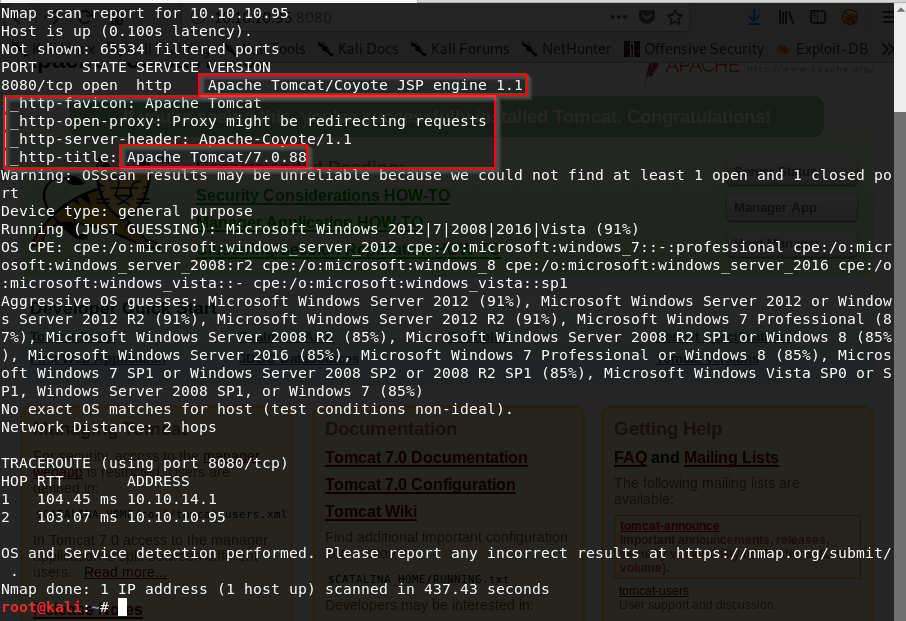

we're going to learn that default credentials how cause very bad things.

here our nmap scan and one port open this is great. Because we can focus just that port. Now there are some situations where there might be hit ports like port knockingbbut for that easy box that's not the case.
we're seeing some information in scanning. Like Apache/Tomcat 7.0.88 this is perhaps a default web page. And if it's not a default web page why they disclosing their server headers with service information. This is a no no or a finding.
Firstly let's go to the default web page and see what are there

and we're brought to this apache tomcat page. This is not a good page should be leaving open and even if it's on the internal network. But if this is on the externals is bad and you'll find this on external networks.
People will tuck it away under like /manager or /admin or whatever because of this red signed area that is what gets you into the admin panels. So you do see this a lot.
And if there is any sort of guest or default credentials on this. it's game over.
So this would be a finding oo depending on what you're doing and if this is external. This is like hey why do you have this up. You know you should put this behind a VPN so that only you can access it when you're on the internal side. if it's On the internal side who has access to this page? Why do they have access to this page? You don't want this easily accessible by any means.
Now we can log in with the manager app and do some malicious things. But before we can log in here one of the first things I do when I see a login page like this with the service version is we're going to go to google and say "tomcat default credentials"

(https://github.com/netbiosX/Default-Credentials/blob/master/Apache-Tomcat-Default-Passwords.mdown)
we'll take these credentials and do brute forcing. There are some tools out there for that but we'll do in manual way with these credentials.
we're going to do settings to intercept traffic as we've done before
firefox > preferences > Network Proxy settings > Manual proxy configuration > tick use this proxy for all protocols(127.0.0.1:8080) that's it. and then go to 10.10.10.95:8080 webpsge

now we can modify this request to do some malicious things.
let's forward(because burpsuite intercept request so with that we free the request ) and go to manager app in that page.

let's forward and see what's happen

let's try tomcat tomcat

one option we can do is that right click to that and send decoder and this is base64 because typically there is equal signs at the end of it.

decode as base64.
go forward and look what happenns it look like didn't work.
Ok let's do some different things username: manager pass: tomcat and say OK and in the burp suite send to this repeater. And number two send this to intruder.
repeater just repeats the requests. in repeater instead of sending it in real time with a proxy we can modify the requests and see the corresponding responses immediately.

if we send this we're seeing 401 unauthorized. that's credentials are not correct so let's do some brute force.
we'll get these credentials in the github link and paste a file tomcat.txt or along this line. And we must edit this file as base64 format.
like in here username:password format

press ctrl+h

we've copied in between space

we've saved this and exited. We're gonna do some bash scripting.
we've to encode these credentials as base64 and for that we're going to write a bash script. Just one credentials this would be like that;


this is going to take all credentials in the tomcat.txt one by one and encode as base64.

let's copy these and paste in here;

sniper attack means that it'll fire off just one payload each time so for 25 credential it'll fire off 25 payload. After press add for highlighting area 
we're doing this as like above.
And additionally we need to take off this url-encode these characters section. Because it is going to attempt url-encode these characters and we have = in base64.
We started attack and we got it!

status 200 means OK. But in long lists it is better to grep some error or like this. So for that 

we're doing these but there is caveat about why we are doing these. Well because of that sometimes our status code might be different like 302 which is redirect page status code so may be
challenging trying to find these status codes or something.
how do we find out which credential is that? right click and send to decoder and decoders as base64 bla bla

with that credential now we are inside the application itself


in here we've WAR file section
---------------------------What is Java Servlet------------------------------
A servlet is simply a class which responds to a particular type of network request - most commonly an HTTP request. Basically servlets are usually used to implement web applications - but there are also various frameworks which operate on top of servlets (e.g. Struts) to give a higher-level abstraction than the "here's an HTTP request, write to this HTTP response" level which servlets provide.
Servlets run in a servlet container which handles the networking side (e.g. parsing an HTTP request, connection handling etc). One of the best-known open source servlet containers is Tomcat.
(https://stackoverflow.com/questions/7213541/what-is-java-servlet)
---------------------------------------------------------------------------
--------------------WAR Files------------------------------
WAR. Is the extension of a file that packages a web application directory hierarchy in ZIP format and is short for Web Archive. Java web applications are usually packaged as WAR files for deployment. These files can be created on the command line or with an IDE like Eclipse.
After deploying our WAR file, Tomcat unpacks it and stores all project files in the webapps directory in a new directory named after the project.
------------------------------------------------------------------------------------
we can upload some malicious war file to that section and get reverse shell
let's go to google and say war file reverse shell and see what is coming.


we generate a payload now we need to listen 4444 port in order to gain reverse shell.

we need to click /shell in order to execute the war file.

ANNND BOOM WE GET A SHELL
!!IN MY FIRST ATTEMPT I COULD'NT GET A SHELL BECAUSE MY BURPSUITE IS RUNNING AND THEN I TURNED OFF THAT IT IS WORKED.

we can look at this kind of things. These is not be useful in a hackthebox environment but if you're doing like a lab environment super useful to see who it's talking to. Same thing with netstat and route print commands.
But despite of all of these we are still in a shell with limited flexibility let's improve our shell.
For that we want to create a new reverse shell to this machine.

this is x64 architecture so we know that.


Ok how do we get a file onto windows machine. Well first and foremost we need to host a webserver the easiest way to host a webserver is with python.


i can access all the files in my root directory.
when we talk about collecting or transporting files on windows there is a tool that's on there. Now it's starting to get picked up by a defender but for a long time it didn't. So on assessments it still works fairly well.
What we can do here is a built in tool. Now everybody knows about wget for Linux.
This is Heath's idea of the quick and dirty way of doing like a wget for Windows.
That's not very commonly well known.


Booooom we improved our shell.
!!!!!in the real world this is going to be picked up fairly fairly easily.
But you know we could obfuscate this more but in a situation like this or even a bad environment where they don't have good security system something like this is not going to get picked up at all.